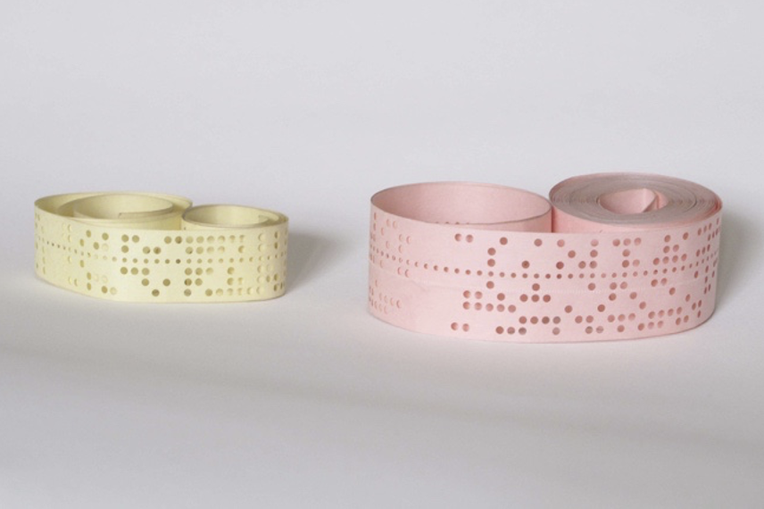
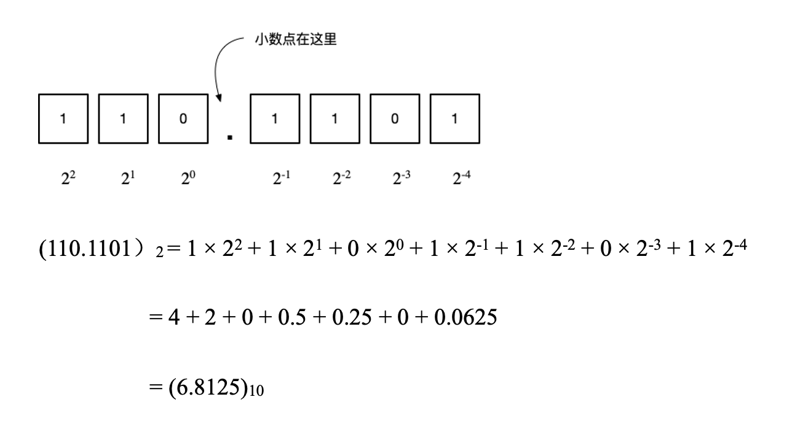
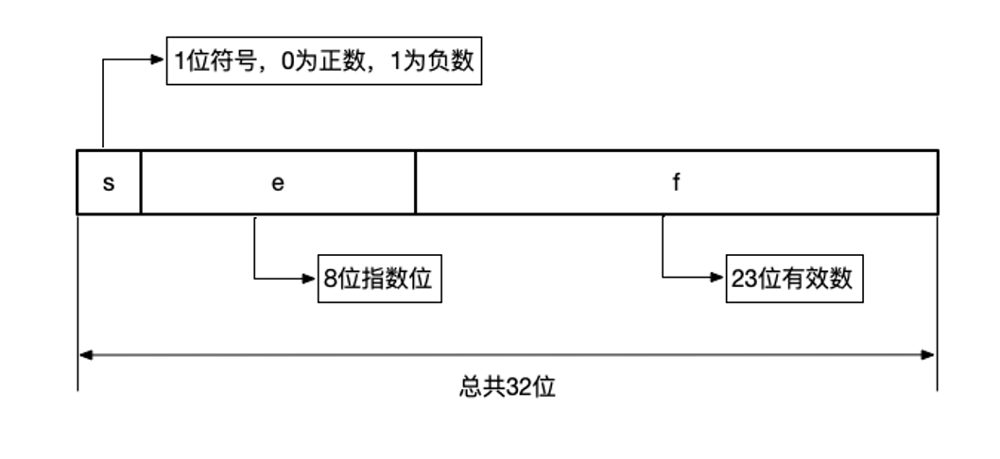
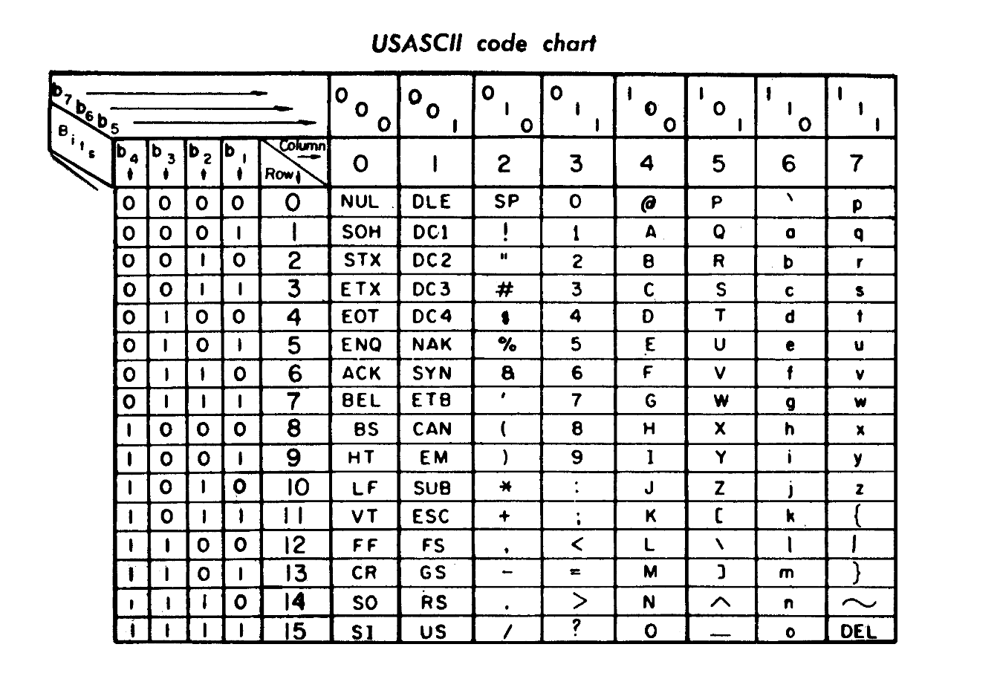
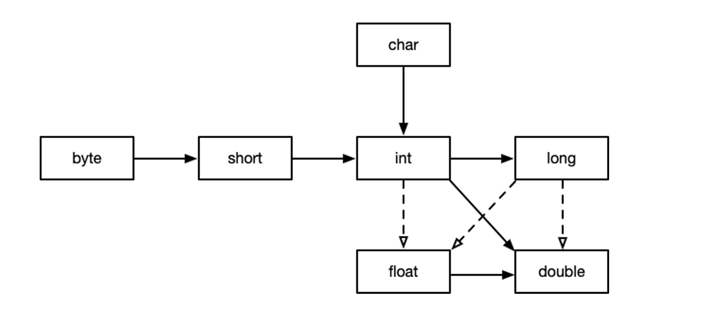

第4章 变量
在这个宇宙中，易变的可不止人心，而是一切。留不住时间，于是年龄会变。保不住新鲜，于是爱人会变。纹身店里，热恋时，胸前纹“一生最爱某某某”有多爱，分手后，用激光清理这些爱的“垃圾”，就有多恨。有办法么？有倒是有的，就是把“一生最爱”纹在身上，后面的“某某某”，用纹身贴纸即可。“一生最爱”是常量，而这个“某某某”就是本章要讲的变量。
当我把纹身的故事讲给我的同事小潘的时候，我觉得这么有趣的故事，他应该会觉得我很风趣。
结果他说：“栋哥，你知道大力神杯么？”
我回复他说：“知道了，怎么了？”
他说：“每届世界杯冠军都会在上面刻上自己的名字，为什么要洗呢？别人在胸前纹身，你为什么不可以把你的名字纹在她背后呢？”
在编程中，变量有很多条条框框，比如，要有个名字，叫变量名。在软件开发领域很有影响力的Martin Fowler，敏捷软件开发的大神，在2009年7月14日曾经发过这样一条推，内容如下：There are only two hard things in Computer Science: cache invalidation and naming thins —— Phil Karlton。这句话翻译成中文是：“在计算机科学只有两件最难的事，缓存失效和变量命名。 – Phil Karlton”
起初我觉得Phil Karlton的这句话是玩笑，但是后来想了一下，并不是玩笑。在编程中我们可没有那么多玩笑，给变量命名真的很难。
在构建代码的过程中，最基本的构建活动是如何使用变量。要理解变量，一要像门卫一样问变量三个问题：“你是谁？”“从哪里来？”“到哪里去？”。
在《西游记》的第八十二回《姹女求阳 元神护道》这一章里，有这样一段：
这段描写里，八戒的回答相当于什么都没有回答，他既没有回答他从哪里来，又没有回答他向哪里去，又没有回答他是什么名字。仔细想来，我们很多时候都是八戒，好像是明白了，实际上什么都没说，什么也不知道。在学编程的时候，我们不能就这么糊弄过去，一定要搞清楚变量的来龙去脉。
1 变量的历史
在编程的最初，根本没有变量，也就不要说变量名了。最早期的电脑只解决特定的问题，不能编程。甚至，最早的电脑编程都不是我们现在见到的编程。
我在电台里讲过世界上最早的计算机之一ENIAC，对这台电脑编程的方法是重新布线，每次编程就像重新装修房子改水电暖一样复杂。可能因为女人天生心灵手巧的原因吧，负责这项工作的人最初都是女程序员。有一篇名为《When Computers Were Women》文章介绍了当初给ENIAC“编程”的女程序员。对ENIAC贡献最多的六位女程序员，在1997年入选国际科技名人堂。在CNN拍的一个名为《Rediscovering WWII’s female ‘computers’》中也讲述了这些最初的女性程序员群体。
在当年的ENIAC上，“写程序”意味着花好几天时间来手工更改线路。下图就是当年的工作场景。
这样“编程”很麻烦，后来在冯·诺伊曼的指导下，Adele Goldstine写了一段程序，让ENIAC拥有了存储程序的功能，让计算机改变功能从几天的时间缩短为几小时，付出的代价是运行的效率变慢。1949年，冯·诺伊曼的建议和规划下，制造出了可以编程的计算机EDSAC，输入程序和数据使用的媒介是纸带。当改变计算机的功能时，不再需要重新连接电缆，只要需要不断读取纸带上的数据就可以。这样一来，变更计算机上的程序变得更加简单方便了。

通过纸带输入程序看起来很神秘，实际上理解了汇编语言以后，并没有什么难理解的。
如果本书的读者对汇编语言不了解，这一段可以跳过。对Java编程来说，理解汇编语言并没有太大的帮助。如果你是编程的爱好者，推荐深入的学习。我特别想把事情的原理搞清楚。
国外有很多的爱好者，已经借助目前的硬件（比如树莓派），做出了当年的纸带仿制品。甚至当年的ENIAC电脑，也早已经用现代的技术做了复制。推荐大家在网上搜索“ENIAC on a Chip”，可以找到不少ENIAC用芯片做的复制品。当年重达27吨的电脑，如今可以被一个学生完全复原在一个只有8毫米的芯片上。
再多强调一次，如果没有汇编语言的经验，可以跳过这一节，或者就把这一节当成故事来看好了。早在1949年的EDSAC电脑上，已经有了变量的概念。EDSAC电脑也有自己的模拟器，如果有人有兴趣，可以的网上搜索，或者在脚注里的链接去实际何体验一下这个与共和国同龄的电脑。在剑桥大学提供的一份名为《EDSAC Initial Orders and Squares Program》的文档， 这这份文档中，已经出现了变量，那时候的变量，更像是帮助记忆的符号。
《EDSAC Initial Orders and Squares Program》这份文档我也放在xueban.app社区中了。
每款CPU都有自己的机器语言，只有机器语言才能在CPU上运行，但是机器语言对人类实在太不友好了，没人会用0和1来写软件。我以计算机系的流行的X86汇编举例，要执行这样一条命令：将一个8位的值移动到寄存器AL中，AL寄存器的地址是000，这个8位的值是十进制97，用机器语言是这样写的：
10110000 01100001其中后面的01100001是97这个数字，前面的那8位二进制要分成两部分，10110在机器语言中代表“移动”，随后的三位000是AL寄存器的地址，所以10110000这一串的意思是“将一个值移动到AL寄存器中”。用这个太麻烦了，一不小心可能连0和1都写错了，所以，可以用十六进制稍微简化一下：
B0 61这比用二进制好写一点，但是仍然没有太大改观。于是，人们想起了汇编语言，用mov来代替10110，用AL寄存器的名字来代替这个寄存器的地址000，至于97这个值，就用十六进制写吧，于是汇编就有了一点可读性：
MOV AL, 61h用AL代替000这个地址，意义重大！套用第一个登上月球的阿姆斯的一句话：“这是汇编语言的一小步，却是编程历史上的一大步”， 从此，有了变量以后，人们可以不用再记内存真实的物理地址了。
随后的编程语言，都采用了变量的形式。随着编程语言的进化，变量有了更多的意义。从机器语言到汇编语言，变量主要是用名字来代替数据的存储地址，使程序更容易编写，更容易阅读，更容易维护。后来像Java，C/C++语言，变量已经不仅仅是存储地址的名字，变量要从更多的维度来考虑，除了名字，还要从地址、数值、类型、作用域和生存周期这六个方面来考虑。接下来，我就从这六个方面来研究Java的变量。
2 变量的命名
在Java编程语言中，正确地命名变量是至关重要的。一个好的变量名不仅能提高代码的清晰度，还能传达出有关变量的重要信息。例如，遵循命名规范的标识符能让读者一眼看出它是一个变量、常量、包，还是类。这样的命名实践对于代码的理解和后期维护都是非常有益的。Oracle官方网站上就有一套推荐的命名规范，对于想要深入了解这一主题的开发者来说，搜索“Naming Conventions”以访问相关文档是一个很好的起点。
在Java编程语言中，除了字母（A~Z, a~z）、下划线（_）和美元符号（$）之外，任何Unicode字符都可以合法地用于变量命名，值得注意的是，数字不能作为变量名的首字符。这意味着在Java中，理论上可以使用各种非传统且独特的变量名。然而，官方还是推荐遵循以小写字母开头的变量命名习惯。这不仅符合大多数程序员的编码规范，而且有利于使用正则表达式对变量名进行统一处理和识别，从而提高代码的可读性和维护性。接下来，我们先来运行一段简单的代码。
public class VariableNamingExample {
public static void main(String[] args) {
// 分别声明两个整数类型的变量，名为myNumber和mynumber
int myNumber = 10;
int mynumber = 11;
// 声明一个字符串类型的变量，名为myString
String myString = "Hello, World!";
// 声明一个布尔类型的变量，名为isDone
boolean isDone = true;
//声明并初始化为10的整数类型变量count
int count = 10;
System.out.println("The value of myNumber is: " + myNumber);
System.out.println("The value of mynumber is: " + mynumber);
System.out.println("The value of myString is: " + myString);
System.out.println("The value of isDone is: " + isDone);
System.out.println("The value of count is: " + count);
}
}上面的代码展示了变量名，该例子运行之后，得到的结果如下：
The value of myNumber is: 10
The value of mynumber is: 11
The value of myString is: Hello, World!
The value of isDone is: true
The value of count is: 10在Java编程语言中，标识符是一种用于命名各种编程元素的字符序列，这些元素不仅涵盖了变量，还延伸至许多其他重要的结构。比如，标识符还包括以后要讲的类名、接口名、方法名、包名及常量等众多编程标识。什么字符可以用作合法的标识符呢？这些字符包括字母（无论大小写）、数字、下划线（_）以及美元符号（$）。但是对变量来说，还是尽量遵守如下的约定：
- 使用字母作为变量名的首字符更符合人们的阅读习惯，更容易理解和识别。使用下划线（_）作为首字符虽然合法但是不推荐。使用美元符号（$）作为首字符虽然也合法，但是容易跟一些框架冲突。
- Java编程语言具有大小写敏感特性，这意味着在变量名的识别与处理过程中，系统会严格区分大小写字母，即同一名称但大小写不同的变量会被视为两个独立的标识符实体。比如代码中的myNumber和mynumber就是两个不同的变量。
- 采用具有明确含义的名字是编程中的良好实践，而驼峰命名法（camelCase）作为其中一种流行的标准格式，被广泛应用于Java开发中。在驼峰命名法下，单词首字母小写且后续每个单词首字母大写的书写规则，能够清晰地将多个词合成一个连贯且易于理解的标识符名称，从而有效增强代码的一致性和可辨识度。比如代码中的isDone。
- 在Java编程语言中，保留字（Reserved Words）是预先赋予特定含义的关键词，它们被系统内部使用来表示特殊的语法规则或执行特定的功能。由于这些保留字具有固定的用途和功能，因此不能将它们用作变量名、类名或其他标识符名称，否则会引发编译错误。例如，诸如if、else、class、public等均属于Java的保留字，不能作为自定义的编程元素标识符使用。
3 变量的数据类型
在Java编程语言中，必须为每个变量明确指定数据类型。这是由于Java属于静态类型语言，意味着所有变量的数据类型必须在编译时确定。这种设计使编译器能够提前识别类型错误，从而增强代码的安全性和稳定性。
在Java中，为变量指定类型是通过在声明变量时首先写出数据类型，紧接着是变量名，最后是赋值或初始化。Java 10及更新版本引入了局部变量类型推断，这允许开发者在某些情况下使用var关键字声明变量，从而简化代码。但即使使用var，编译器在背后仍然会确定变量的确切类型，所以这并不是真正的动态类型。以下展示了如何为变量指定类型。在这个例子中，height被明确声明为double类型，而score则利用var关键字让编译器推断其类型。这种做法虽然提高了代码的简洁性，但应谨慎使用以保持代码的清晰度。
// 声明并初始化一个double类型的变量
double height = 1.0;
// Java 10及以上版本支持使用var关键字进行局部变量类型推断
// 编译器会根据右侧的初始值自动推断出score为int类型
var score = 85; 在Java编程语言中，遵循前置类型标注的语法约定，即变量的类型声明必须在变量名之前。这种方式与C等较早的语言一致，它们都采用了类似的前置类型定义规则。与之相对，一些现代编程语言如Swift和Kotlin则更偏好后置类型标注，也就是先声明变量名，然后再指定其数据类型。两种类型标注方式的选择更多取决于习惯和个人偏好。有些人认为两者在代码可读性上存在差异，但实际上，现代集成开发环境(IDE)会通过颜色编码清晰地区分类型和变量名，因此在阅读代码时并不会造成实质性的影响。
接下来，我们将深入解析Java变量的数据类型体系。对于初学者而言，可能会感到困惑的是，Java同时提供了基本数据类型 (primitive data type，也称为原始类型)和引用数据类型(reference data type)，这两套系统看似功能有所重叠。那么，为什么要引入这两套数据类型体系呢？官方解释指出，Java之所以设计两套数据类型系统，是为了满足不同的编程需求。一方面，基本数据类型适用于简单的数值计算与存储，具有更高的性能效率；另一方面，引用数据类型则更侧重于提供面向对象编程的支持，从而实现更灵活、更强大的数据结构和操作。
在深入探讨具体细节之前，我想先分享一点我的个人看法。我认为，尽管Java 提供了两套看似功能相似的数据类型体系，但其带来的优势可能并没有那么显著，而随之而来的问题却不容忽视。从性能角度来看，这样的设计在某些场景下提升了效率，但如果追求极致性能，我们或许更应该考虑使用C语言或借助编译器优化等手段。然而，在我看来，这一设计的主要不足在于它增加了学习的难度，容易使程序员在实际开发过程中混淆两种类型的使用，从而导致错误率上升。
为了解决这种类型混淆的问题并简化编程体验，Java 5版本引入了一项关键特性：自动装箱（autoboxing）与拆箱（unboxing）机制。该机制允许程序在基本数据类型与对应的包装类之间自动进行转换，表面上减少了潜在的代码错误。然而，这也并非没有代价：一方面，自动装箱与拆箱操作本身并不高效；另一方面，频繁地进行自动装箱和拆箱操作会增加额外的对象创建和垃圾回收压力，特别是在循环或大量数据处理场景下，可能会对性能产生负面影响。
尽管存在这些问题，但对于Java的学习者而言，理解并掌握这些优缺点仍然至关重要。值得一提的是，后续出现的语言如C#和Kotlin在发展过程中也借鉴了Java 的自动装箱与拆箱机制，并在此基础上进行了各自的设计改进和优化。因此，掌握 Java的基础知识，对于学习C#和Kotlin这两门同样流行的编程语言也会有所帮助，让学习过程更加轻松。
基本数据类型直接存储固定的、不可分割的基本值，例如数字和字符。具体而言，Java共有8种基本数据类型，包括4种整数类型(int、byte、short、long)、2 种浮点数类型 (float、double)、1 种字符类型(char)以及布尔逻辑类型(boolean)。这些类型的变量在内存中占用固定大小的空间。
与基本数据类型相比，引用数据类型更加复杂和灵活。它们并不直接存储具体的值，而是存储指向内存中其他位置的引用或地址，实际数据则存放在该地址处。这类数据类型涵盖了类(class)、接口(interface)、数组(array) 以及其他复合结构。值得一提的是，有一种特殊的类被称为包装类，它们为每种基本数据类型提供了一个对应的引用数据类型，其对应关系如下表所示。
| 基本数据类型 | 包装类 |
|---|---|
| boolean | Boolean |
| byte | Byte |
| short | Short |
| int | Int |
| long | Long |
| float | Float |
| double | Double |
| char | Character |
通过使用包装类，我们可以将基本数据类型的值转换为对象，从而在需要对象的地方使用它们，例如对象实例(可以包含多个属性和方法的实体)、列表(List)、集合 (Set)、映射(Map)以及更高级的数据结构如树(Tree) 和图(Graph)等。这个转换过程由Java提供的自动装箱和 拆箱机制自动完成，使得基本数据类型与它们的包装类之间能够无缝衔接。
尽管包装类为基本数据类型提供了对象化的表现形式和更丰富的功能扩展，但我们不能忽视基本数据类型作为Java语言基石的重要性。基本数据类型的变量存储效率高，占用内存少，这对于性能敏感的应用场景至关重要。此外，对基本数据类型的操作通常更为直接和高效，无需涉及装箱和拆箱过程带来的额外开销。因此，理解和掌握基本数据类型对于编写高效的Java代码至关重要。接下来，让我们深入学习基本数据类型。
3.1 基本数据类型
在 Java 编程语言中，基本数据类型是构建程序逻辑的基石。它们是最底层、最基础的数据结构，用于直接存储不可分割的原始值，而非引用其他对象或数据结构。
这些基本数据类型的变量在内存中占用固定大小的空间，并且在声明时就确定了其存储的内容类型和范围，访问速度快。因此，在处理大量简单数据或者对性能要求较高的场景中，选择合适的基本数据类型对于程序的效率和性能至关重要。
前文已经提到，Java中共有8种基本数据类型，对这8种基本数据类型，可以分为以下4类来学习：整数类型、浮点数类型、字符类型以及布尔类型。
3.1.1 整数类型
整数类型包括byte、short、int、long，分别对应不同的字节长度和数值范围。
byte 占用1字节，取值范围为-128至127
short 占用2字节，取值范围为-32,768至32,767
int 占用4字节，取值范围为-231至231-1
long 占用8字节，取值范围为-263至263-1
在进行整数运算时，尤其需要警惕潜在的溢出风险。当计算结果超出目标整数类型的取值范围时，系统将无法正确存储该结果，进而引发溢出现象。需要注意的是，Java 语言并未内置自动检测和处理整数溢出的功能，这意味着程序员在实现涉及整数运算的代码段时，务必谨慎对待可能发生的溢出问题。
接下来，我们将通过如下代码示例展示 Java 整数的溢出风险以及溢出后 Java 所采用的处理方式。
public class OverflowExample {
public static void main(String[] args) {
// Java中int类型的范围是-2^31到2^31-1
int maxInt = Integer.MAX_VALUE; // 最大整数值 2147483647
System.out.println("整数所能表示的最大值为: " + maxInt);
// 当尝试加上一个正值时，会发生溢出
// 输出结果将是 -2147483648，因为发生溢出，数值从整数的最大值回到了最小值
int overflowedValue = maxInt + 1;
System.out.println("最大值上加1之后，会得到： " + overflowedValue);
int minInt = Integer.MIN_VALUE; // 最小整数值 -2147483648
System.out.println("整数所能表示的最小值为: " + minInt);
}
}上面的代码运行之后，输出结果如下：
整数所能表示的最大值为: 2147483647
最大值上加1之后，会得到： -2147483648
整数所能表示的最小值为: -2147483648在这个示例程序中，我们首先获取 int 类型的上限值，并将其打印输出到终端。随后，我们尝试将这个已知的最大值加 1。由于这个操作会导致结果超出 int 类型的有效范围限制，因此系统会发生整数溢出。这意味着计算后的结果会循环回绕到 int 类型的下限，即最小可能值。
这种处理机制被称为回绕（wrap-around），指的是当数值超出某个数据类型的表示范围时，会回绕到该数据类型的最小值。例如，当一个 int 类型的变量超过其最大值时，它会 “回绕” 到 int 类型的最小值，就好像数字在一个圆环上循环一样。
在编程时，选择合适的整数类型对于提高代码效率和可读性至关重要。因此，我选择整数类型的策略是：在没有特殊需求或明确目的的情况下，优先选择 int 类型作为默认的整数数据类型。接下来，我将深入剖析这一原则背后的原因。
前文提到，Java 虚拟机 (JVM) 具备一套全面的指令集体系，涵盖了诸如算术运算、逻辑操作、比较判断、存储器管理以及控制流程等多方面的指令。这套指令集能够处理包括 int、long、float、double、boolean 和 char 在内的多种基本数据类型的运算。然而，值得注意的是，对于 byte 和 short 这样的较小整数类型，JVM 并没有特地设计单独的操作码来进行直接处理。
相反，为了简化指令集的设计结构，并提高代码执行效率，JVM 采用了隐式类型提升机制。当遇到 byte 或 short 类型的变量参与运算时，JVM 会先将这些值自动转换为int类型，然后再运用通用的 int 类型操作指令来执行实际操作。换句话说，虽然 byte 和 short 没有专门的操作码，但它们在运算时会被 “提升” 为 int 类型，从而保证了指令集的简洁性和统一性，并在性能上实现了优化平衡。
既然在 Java 运算过程中，byte 和 short 类型的变量都会被自动提升至 int 类型进行操作，那么为什么不从一开始就只保留 int 类型呢？当然，在特定场景下，这种“一步到位”的做法并不总是最优解。例如，在对存储空间要求极为苛刻的情况下，选择 byte 或 short 能够显著地压缩数据尺寸，从而发挥关键作用。特别是在处理图像像素数据、网络传输等需要大量紧凑存储和高效传输的领域中，byte 类型和 short 类型的数据类型都有其独特的价值和必要性。
3.1.2 浮点数类型
在Java编程语言中，存在两种浮点数类型：
float：单精度浮点数类型，占用4字节（共计32位）内存，其数值范围大致从3.4e-038到3.4e+038，能够提供大约6到7位的可靠有效数。由于其较小的内存占用，float类型适用于对精度要求相对不高且需节省存储资源的应用场景。
3.4e-038 表示的是 3.4 乘以 10 的负 38 次方，即小数点向左移动 38 位。这是 float 类型的最小正数值，接近于 0。3.4e+038 表示的是 3.4 乘以 10 的正 38 次方，即小数点向右移动 38 位。这是 float 类型的最大正数值。
double：双精度浮点数类型，占用8字节（共计64位）内存，数值范围大致为1.7e-308到1.7e+308，并能确保大约15到16位的有效数字精度。由于更高的精度表现，double通常被推荐为默认的浮点数类型，在不考虑特殊内存约束或精确度需求的情况下应优先使用。
1.7e-308 表示的是 1.7 乘以 10 的负 308 次方，即小数点向左移动 308 位。这是 double 类型的最小正数值，接近于 0。1.7e+308 表示的是 1.7 乘以 10 的正 308 次方，即小数点向右移动 308 位。这是 double 类型的最大正数值。
这两种浮点数类型 (float 和 double) 均支持正负数表示，并且它们在实际存储时都遵循 IEEE 754 标准。这意味着它们无法准确表示所有实数，尤其是那些不能被精确转换成二进制分数的十进制数。
之所以会有精度损失的问题，是因为计算机内部采用二进制来表示数字。由于十进制小数并非都能精确转换为有限长度的二进制小数，这导致了部分十进制浮点数在计算机内只能近似表示。例如，十进制的 0.1 无法用二进制精确表示，因此在计算机中存储和计算时会产生微小的误差。
当涉及到比较两个浮点数是否相等时，由于上述精度损失的存在，直接使用等于运算符 “==” 来进行比较可能会得到意外的结果。例如，两个理论上应该相等但实际上由于浮点计算过程中产生的微小误差而变得不完全相等的浮点数，用 “==” 比较将返回 false。为了正确地比较两个浮点数是否足够接近以被认为是相等的，通常采用的方法是设定一个合理的误差范围（也称为 epsilon 值），并检查两者之差的绝对值是否小于这个误差阈值。
接下来，我们将通过示例演示浮点数存在的问题以及解决方法，代码如下所示：
import java.math.BigDecimal;
public class FloatingPointPrecisionDemo {
public static void main(String[] args) {
// 演示浮点数表示不精确
float a = 0.0001f, b = 100000.0f;
// 输出可能不是预期的100000.0001
System.out.println("直接加法结果: " + (a + b));
// 使用误差范围（epsilon）进行浮点数比较
float x = 0.1f, y = 0.10000001f;
boolean areAlmostEqual = Math.abs(x - y) < 0.00001f;
System.out.println("使用误差范围判断是否相等: " + areAlmostEqual);
// 在金融应用中建议使用 BigDecimal 类
BigDecimal amount1 = new BigDecimal("1234.56");
BigDecimal amount2 = new BigDecimal("789.01");
BigDecimal sum = amount1.add(amount2);
System.out.println("精确的货币计算结果: " + sum);
}
}运行之后，结果如下：
直接加法结果: 100000.0
使用误差范围判断是否相等: true
精确的货币计算结果: 2023.57在计算机编程中，浮点数类型的累积误差是指在进行一系列浮点数运算过程中，由于浮点数的表示方式和精度限制，导致最终结果与理论预期值之间产生的偏差。特别是对于那些不能精确表示为二进制分数的十进制数，在进行加减乘除等连续运算时，每一步计算都会引入一些微小的舍入误差。这些误差在单次运算中可能非常微小，几乎可以忽略不计，但随着计算步骤的增加，这些误差会逐渐累积起来，从而可能导致最终结果与实际期望值有较大的差异。这个问题在需要高精度计算的领域，如金融、科学计算等，尤为重要。
接下来，我将通过一个例子来解释浮点数类型的累积误差问题。
美国政府问责局（Government Accountability Office，GAO）曾发布过一份官方文件，其中披露了在1991年2月25日海湾战争期间发生的一起重大事件。这份报告指出，爱国者导弹防御系统遭遇了一次关键性失误，未能成功拦截一枚飞毛腿导弹，导致该导弹击中一处美军营房并造成 28 名士兵不幸丧生的悲剧。
这篇报告名为《Roundoff Error and the Patriot Missile》，我已经放到xueban.app上了，该报告详细讲了事故原因。
针对这一事件，专家 Robert Skeel 撰写了一份深度剖析报告。报告显示，爱国者导弹防御系统内部计时机制的设计缺陷是此次失效的核心原因。具体来说，由于计算机处理浮点数计算时无法避免微小的精度误差，该系统的计时精确度每经过 8 小时会产生约 0.0275 秒的累积偏差。截至事故发生之时，该系统已连续运行了整整 100 个小时，累计产生了大约 0.34375 秒的时间差错。
值得注意的是，飞毛腿导弹以高达 5 马赫的速度飞行，即每秒钟可以飞行约 1.7 公里。因此，这看似微不足道的 0.3 秒多的时间误差，在实际操作中却相当于让导弹飞行了约 600 米的距离，足以使其绕过原本应能拦截到的防线。正是这微小的精度损失，最终导致了这场重大灾难性后果。
爱国者导弹防御系统失误的案例，仅仅是计算机在执行浮点数运算时的常规 “差错” 的一个缩影。计算机在执行涉及浮点数运算的任务时，由于其二进制表示机制、精度限制以及标准化浮点数格式（如 IEEE 754）的设计特性，产生 “小差错” 是必然的结果。这些看似微不足道的 “小差错”，提醒着我们计算机并非精确无误的工具，也激发着我们深入探究计算机如何处理数字的核心领域 —— 小数计算。
对计算机如何处理小数的历史进行深入探究，或许对实际编程没有直接的指导意义，但这段历史对于编程爱好者而言却充满了魅力。因此，我决定将关于计算机如何处理小数的历史附于下面，当作补充阅读材料，以飨那些对此怀揣好奇的读者。
当前，计算机科学中广泛采用的 IEEE 754 标准为大多数计算平台提供了表示带有小数部分的实数的方法。在 Java 编程语言中，我们所熟知的 float 数据类型名称源于 “floating-point” 这一术语，意指浮点数；而 double 类型的命名则因其精度大约是 float 类型两倍的特点而来。
提及浮点数，人们自然会联想到其对应的 “定点数 (fixed-point)”。事实上，确实存在定点数这一概念，并且了解了定点数之后，对于浮点数的理解将更为轻松和直观。
接下来，我将详细介绍定点数是什么，以此作为理解浮点数的一个重要铺垫。
定点数
定点数（fixed-point numbers）是一种用于表示小数的方法，通过将数值分成整数部分和小数部分来实现。这种表示方式在嵌入式系统、DSP（数字信号处理）以及一些低功耗或性能受限的计算环境中尤为常见，因为这些环境可能不支持浮点运算，或者浮点运算的开销较高。类似地，在金融与商业领域，使用定点数可以有效的减少二进制与十进制转换的误差。
定点数通常采用固定长度的二进制位模式来编码数据，其中分配给整数和小数的位数均预先设定好。例如，在一个16位的定点数格式中，可以将其划分为8个整数位和8个小数位，小数点则始终固定于第8位（从低位数算起）。定点数的表示方法有多种，比如在数字信号处理领域中采用的Q格式表示法，在金融与商业领域，会用到BCD码的方式。接下来，我详细介绍一下BCD（Binary-Coded Decimal，二进制编码的十进制）码的表示方法。
以下是BCD码的具体表示规则：它用四位二进制数精确对应十进制数的一个数字，两者之间有一一对应的转换关系，如下表所示:
| 十进制数字 | 二进制数字 |
|---|---|
| 0 | 0000 |
| 1 | 0001 |
| 2 | 0010 |
| 3 | 0011 |
| 4 | 0100 |
| 5 | 0101 |
| 6 | 0110 |
| 7 | 0111 |
| 8 | 1000 |
| 9 | 1001 |
由上面的对应表可知，每个十进制数对应4位二进制数字。如果要表示一位十进制数8，则可以用1000来表示，如果要表示两位十进制数10，则要分别表示1和0，其中的1表示为4位二进制0001，0则表示为4位二进制 0000。可以把两个十进制数字放一个8位二进制中，正好一个字节中，这种把两个十进制放入一个字节的方法被称之为压缩BCD（packed BCD）。那么十进制数字10用压缩BCD的方式表示为00010000。
以日常生活中去超市为例，我们会经常看到商品的标价为19.99元、9.99元这样的价格。在超市场景下，计价系统的小数位事先确定为两位小数，也就是精确度保留到分即可。假设我开了一家超市，要处理的账目是±1000万，精度精确到分，这意味着系统可以表示如下范围的数字：-10,000,000.00元到 +10,000,000.00元。
当我要表示一笔3,898,190.25元的记录，可以从最后开始，以两位十进制数字为单位进行拆分，写成如下的方式：
| 3 | 89 | 81 | 90 | 25 |
|---|---|---|---|---|
| 00000011 | 10001001 | 11000001 | 10010000 | 00100101 |
定点数因其固有的特性，在特定应用场景下具有一些优势：其固定的数值表示形式使得存储空间需求更小，同时避免了复杂浮点运算的开销。然而，这种数据类型也存在局限性，即其数值范围和精度是预先设定且不可变的，无法根据实际需求进行灵活调整。若已知待处理的数据具有明确的数值边界，则采用定点格式的小数无疑是明智之举，它能够确保在预设范围内不会出现意外的精度误差。
在Java的标准库中，并未直接提供对定点数类型的内建支持，而是侧重于原生支持浮点数类型，如float和double。尽管浮点数类型的计算速度可能相对较低，并且在某些情况下会出现一定的精度损失，但它们具备比定点数更高的精度水平以及更为宽广的数值表示能力。接下来，我们一同深入探讨Java中的浮点数类型的机制。
浮点数
在讲浮点数之前，先来讲一下如何用二进制表示小数。在计算机中，小数可以使用二进制表示法来存储和处理。二进制小数表示法基于科学计数法，将小数部分转换为二进制数，并使用科学计数法的形式来表示数值。
将十进制小数转化为二进制小数的步骤如下：
- 将小数部分乘以 2，得到积和整数部分。
- 将积的整数部分作为二进制数的一位，并将小数部分保留。
- 将小数部分重复第 1 步和第 2 步，直到小数部分为 0 或达到所需的精度。
例如，将十进制小数0.625转化成二进制小数的过程如下：
0.625 × 2 = 1.25，整数部分为 1，小数部分为 0.25
0.25 × 2 = 0.5，整数部分为 0，小数部分为 0.5
0.5 × 2 = 1.0，整数部分为 1，小数部分为 0
因此，0.625 的二进制表示为 0.101。
那如何将二进制小数转换为十进制小数呢？其方法与将整数从十进制转换为二进制的方法类似，只不过需要将每一位的权值改为 2-n，其中n表示该位在二进制数中的位数。以下是将二进制小数转换为十进制小数的方法：
- 将二进制小数的整数部分和小数部分分别转换为十进制数。
- 对于小数部分，将每一位的权值改为 2-n，其中n表示该位在二进制数中的位数。
- 将小数部分的每一位乘以对应的权值，并将所有结果相加，得到十进制小数的值。
举个例子，以110.1101这个带有小数点的二进制数为例，

当我们在表示一个很大的数的时候，比如美国国债是$25,000,000,000,000，数学上会采用科学计数法来计数，写成这样：2.5 × 1013。在科学计数法中，我们称2.5为首数，10的幂是13，我们称13为指数。在计算机中也类似，只是给首数改了个名字叫有效数，指数没改名字，还是叫指数。
当我们看到2.5 × \(10^{13}\)的时候，知道把小数点向右移动13位，当看到4.5 × \(10{-3}\)的时候，把小数点向左移动3位成为0.00045。因此只要知道了指数，就知道怎么浮动小数点了，指数是正的就向右移，指数是负的就向左移。这就是浮点数的基本原理了，小数点浮动的方向和浮动多少，都由指数决定。 浮点数还有一个规定叫写法的规范化，什么叫规范化呢？还是以美国的国债为例，可以写成2.5 × \(10^{13}\)，虽然写成25 × \(10^{12}\)、250 × \(10^{11}\)都可以理解，但是后面这两种不规范。对十进制来说，规范化是规定有效数只能介于0和10之间。对二进制浮点数来说，规范化的写法第一位只能是1。以110.1101为例，规范化的二进制浮点数只能是1.101101 × \(2^2\)这一种形式，其余的形式都是不规范的。
因为规范化的二进制浮点数第一位永远只能是1，所以根本就没必要存储这一位。因此，对实数来说，IEEE 754规定，只需要存储三个信息即可：代表正负的符号位、代表如何浮动小数点位置的指数和有效值。以IEEE定义的4个字节的float单精度格式为例。

长度为1位的符号位s代表正数还是负数，0表示正数，1表示负数。
随后的8位是指数位e，8位可以代表0到255的数值。在此，我们取1到254，0和255留作他用。小数点有可能向左浮动，也有可能向右移动，我们规定这个数减去127，正好可以左移或者右移，此处的 127我们称之为偏移量。
接下来是23位有效数f，前面已经讲过，有效数的第一位永远是1，所以不用存这一位，只需要在计算的时候补上这个1即可。综上，这个特定的数可以用这个公式来计算：
\((-1)^s × 1.f × 2^{e-127}\)
还有几种特殊情况要单独考虑，比如指数位都是0或者都是1的时候，这也是为什么指数位要保留了0和255两个数用作其它用途的原因，表示无穷大（Positive Infinity），无穷小（Negative Infinity）或者不合法NaN（Not a Number），比如当0/0时或者对一个负数进行平方根操作会返回不合法。这三种情况在实际应用中并不多见，Java为其提供了相应的常量分别是Float.POSITIVE_INFINITY、Float.NEGATIVE_INFINITY和Float.NaN（相应的double类型也有这三个常量）。
接下来我们来看看单精度浮点的表示范围，理解了原理，套用上面的公\((-1)^s × 1.f × 2^{e-127}\)，我们知道绝对值最小的正负二进制是：
\((-1)^s x (1.00000000000000000000000)_2 × 2^{-126}\)
指数位为\((1)_{10}\)，也就是让小数点移动到最左侧，有效值是一个1，后面跟23个0。这个数用十进制表示，近似的等于±1.17549435 × \(10^{-38}\)。最大表示的数是:
\((-1)^s x (1.11111111111111111111111)_2 × 2^{-127}\)
指数位为\((254)_{10}\)，让小数点移动到最右边。有效值为24个1。这个数如果用十进制表示的话，近似的等于±3.40282347 × \(10^{38}\)。所以，只要是用IEEE 754规定的浮点数，float类型的取值范围是 ±1.17549435 x \(10^{-38}\) 到 ±3.40282347 × \(10^{38}\)。
以上就是单精度浮点数的原理，双精度浮点数的原理跟单精度浮点数类似，不再赘述。
3.1.3 字符类型
在 Java 语言中，字符类型作为一种基础数据类型占据着重要地位，它专门用于处理单个字符信息。每个 char 变量占用两个字节（16 位）的空间，并采用 Unicode 字符集进行编码处理，确保能够表示全球范围内的多种语言和特殊符号。
接下来，我们将通过示例详细展示 字符类型的常见用法，包括声明、初始化、比较、类型转换以及在字符串处理中的应用，
public class CharExample {
public static void main(String[] args) {
// 声明并初始化一个字符类型的变量
char myChar = 'D';
// 输出字符
System.out.println("myChar这个字符是: " + myChar);
// 使用字符类型进行比较操作
char anotherChar = 'B';
if (myChar == anotherChar) {
System.out.println("两个字符相同.");
} else {
System.out.println("两个字符不同");
}
// 将ASCII码转换为字符类型
// ASCII值对应字符'D'
int asciiValue = 68;
char charFromAscii = (char) asciiValue;
System.out.println("ASCII为68的字符为：" + charFromAscii);
// 使用字符类型进行字符串处理
String name = "Alice";
char firstLetter = name.charAt(0);
System.out.println("字符串的第一个符为: " + firstLetter);
}
}这段代码展示了如何声明和初始化char变量，并进行简单的字符比较；同时演示了如何将Unicode码（这里是ASCII码）转换为字符类型，以及如何从字符串中提取首个字符。
在计算机科学领域，正确理解和处理字符是一项充满挑战却又饶有趣味的事情，在编程发展史上经历了相当长的一段时间。为了让有兴趣的读者深入了解这段历史脉络，我特地撰写了关于计算机中字符处理发展的历史。
在人类文明的长河中，信息传递与记录方式的发展始终伴随着科技进步的步伐。自古至今，从刻划在泥板上的楔形文字、镌刻在龟甲和兽骨上的甲骨文、书写在竹简上的汉字到印刷术的诞生，字符的记载形式不断演变。随着20世纪计算机技术的崛起，如何让冰冷的机器理解并处理人类语言中的字符，成为了一项至关重要的挑战。早期的计算机系统受限于硬件条件和编码体系的不统一，对字符的识别和处理存在着显著的局限性。
随着时间的推移，从博多码到ASCII码，再到Unicode的提出，每一步都是人类智慧在解决字符编码问题上的一次飞跃。这些编码方案不仅反映了计算机科学的进步，也揭示了全球化时代下文化交融与交流的需求。这段历史见证了字符编码从单一语言向多元文化的包容性转变，同时也为现代计算机系统提供了坚实的语言基础支持。在这段旅程中，我们将会探讨一系列里程碑式的字符编码标准及其背后的故事，从而深入理解计算机是如何逐步“学会”理解和处理各种字符的。
博多码
在看电影时，我们有时会目睹演员用手电筒发出闪烁的灯光以传达SOS求救信号的情节，这种编码方式是源自于约1836年由塞缪尔·摩尔斯发明的摩尔斯码。作为一种历史悠久且曾占据主导地位的通信编码体系，摩尔斯码主要用于早期的电报传输，在二十世纪中叶之前扮演了至关重要的角色，直至随着技术进步和新型通信手段的涌现而逐渐淡出主流舞台。
博多码是在摩尔斯码之后出现的，是在1870年由法国工程师爱米尔·博多（Emile Baudot）发明的一种二进制编码体系。该编码系统巧妙地运用了5位二进制数来表示单个字符，从而理论上能够表达出2的5次方即32种不同的组合。为了扩展字符集，博多码引入了两种工作状态：字母状态和数字状态，使得在有限的32种组合内能够表示更多的字符。在字母模式下，这套编码被用来表示字母及特定符号；而在数字模式时，则用于呈现数字和其他相关符号。
博多码自发明后得到了广泛应用，尤其是在电报通信与早期电传打字机技术中发挥了重要作用。尽管随着时间的推移，它已被更先进的编码方式所取代，但博多码的一项关键设计遗产至今仍深深地影响着我们每一个人的日常生活——即键盘上用于切换字母与数字状态的Shift键。这一设计延续至今，已经成为了现代计算机输入设备不可或缺的一部分。
历经以电传打字机为代表的电传通信网络二十年的发展与积淀，历史迈入了全新的计算机时代。1949年，具有里程碑意义的EDSAC计算机应运而生，这款计算机在字符编码上采用了名为EDSAC编码的方案。这一编码体系深受博多码的影响，同样采取5位二进制形式来表示一个字符，并沿用了博多码中用于切换字母与数字状态的关键设计——Shift键。
EDSAC计算机诞生后的十年间，计算机技术蓬勃发展，各类新型计算机如雨后春笋般涌现，然而这些计算机在字符编码方面并未形成统一标准，每种型号的计算机均有各自独特的编码体系。这一现象导致了不同型号计算机之间数据交流的严重障碍，它们无法直接识别和处理彼此的数据信息，必须通过繁琐且容易出错的编码转换过程才能实现有效的数据交互，极大地限制了当时计算机系统的互操作性和数据共享效率。
ASCII码
鉴于当时计算机领域对于统一字符编码标准的迫切需求，IBM的一位名叫Bob Bemer的员工于1961年向美国国家标准学会（ANSI）提出了ASCII编码方案。ASCII全称为American Standard Code for Information Interchange，即信息交换的美国标准代码，这一名称清晰地表达了其旨在消除不同计算机系统间信息交流障碍的初衷。
在提出后的两年内，ANSI采纳并发布了首个ASCII编码标准版本。随着技术发展和应用需求的变化，ASCII编码历经了多个版本的修订和完善。至1972年，ASCII编码已有了一个较为成熟的版本，它为后续的信息科技领域奠定了基础性的文本编码规范，并对全球范围内的计算机通信产生了深远的影响。下图是1972年的ASCII版本。

观察上图所示的ASCII编码表不难发现，其主要涵盖了英文字符集以及一系列控制字符。ASCII编码体系采用7位二进制数值对单个字符进行编码，基于这一特性，理论上最多能够表达128种不同的字符形态。这些字符囊括了从0到9的阿拉伯数字、全部26个英文字母（包括大写和小写）、各种标点符号以及其他一些具有特定功能的控制字符，共同构成了计算机处理文本信息的基础字符集合。
在ASCII编码体系中，每个字符均对应着一个独一无二的数字标识，这些编码可被计算机系统有效地识别和处理。例如，大写字母”A”的ASCII编码为65（其二进制表示形式为01000001），小写字母”a”的编码则为97（对应的二进制码为01100001），数字”0”的编码数值为48（以二进制显示为00110000），而标点符号”!“的编码是33（其二进制表达为00100001）。尽管ASCII编码所能涵盖的字符集相对有限，但其作为计算机编码的基础原理，在文本处理、网络通信等众多领域中依然发挥着不可或缺的作用。
随着计算机技术的发展以及全球范围内不同语言和符号需求的增长，单一的ASCII编码已无法满足全部需要。因此，人们扩展了ASCII编码体系，发展出了如ASCII扩展字符集1、2和3等多种扩充方案。同时，针对特定语言环境下的字符集，诸如简体中文采用了GB2312编码标准，繁体中文则依赖于Big5编码，俄语则采用KOI8编码机制等。此类编码方式各异，反映出各地区对字符处理的不同需求和复杂性。
Unicode码
为了应对全球字符编码的挑战与需求，Unicode方案应运而生，其别称包括统一码、万国码、国际码和单一码等，这些名称无一不揭示了Unicode所承载的伟大愿景——旨在创建一种能够涵盖全世界所有字符的统一编码体系。从这些多元化的翻译中，我们得以窥见Unicode背后宏大的理想与决心，即实现一个能全面囊括各地区语言文字及特殊符号的普适性编码标准。
1987年，一个雄心勃勃的计划崭露头角，该计划由施乐公司（Xerox）的Joe Becker、苹果公司（Apple）的Lee Collins以及Mark Davis共同发起。他们的愿景是创建一个能够全面覆盖全球主流字符集的统一编码体系。历经精心筹备后，于1988年这一划时代的Unicode标准应运而生，后被人称为“Unicode 88”。
1988年的Unicode文档
1988年发布的Unicode文档的PDF文件我已经放在xueban.app社区中，但是细节实在是太复杂，我只读了一点。之所以叫Unicode，是因为想让这个编码Unique，Unified和Universal。
在这部具有里程碑意义的1988年发布的文档中明确阐述了Unicode的核心目标：“旨在以一种切实可行且稳定可靠的方式满足全球范围内对于文本处理的需求。简而言之，Unicode可以被视为ASCII码的宽广扩展版，其字符容量已从最初的范围拓展至16位，从而有能力容纳更丰富多元的语言和符号。”
让我们进行一个简单的计算，16位二进制所能表示的最大字符数量为216 = 65,536个，其编码范围从U+0000一直到 U+FFFF。在这65,536个字符空间中，涵盖了全球绝大多数主流语言的字符集，诸如拉丁字母、希腊字母、西里尔字母、阿拉伯字母、希伯来字母以及东方文字如汉字、日文平假名和片假名等。
在Unicode编码规范中，每一个字符都对应着一个独一无二的标识，这个标识被称为码点（Code Point）。而在Java编程语言中，通常采用”前缀紧接着四位十六进制数的形式来表示Unicode码点，例如，“041”代表了拉丁字母”A”的码点，而“80B”则表示的是汉字“栋”的码点。接下来，看一下下面代码的例子：
public class UnicodeExample1 {
public static void main(String[] args) {
// 输出拉丁字母“A”的Unicode编码形式
char latinLetter = '\u0041';
// 输出：字母： A
System.out.println("字母： " + latinLetter);
// 输出汉字“栋”的Unicode编码形式
char chineseCharacter = '\u680B';
// 输出：汉字： 栋
System.out.println("汉字： " + chineseCharacter);
}
}解释一下上面这段Java代码，这段代码主要用于演示如何在Java中使用Unicode编码表示和输出字符。
首先，代码声明了一个字符变量latinLetter，并将其赋值为\u0041。在Java中，\u开头的序列是一个Unicode转义序列，用于表示一个Unicode字符。\u0041对应的正是Unicode编码中的拉丁字母”A”（对应ASCII编码中的A）。
接下来，定义了另一个字符变量chineseCharacter，并将其赋值为\u680B，这是汉字“栋”的Unicode编码。
总结来说，这段Java代码通过Unicode编码展示了如何在程序中表示和显示不同语言的字符，无论是拉丁字母还是汉字。通过Unicode编码，Java能够支持全球各种语言和符号的统一表示和处理。
3.1.4 布尔类型
在 Java 编程语言中，布尔类型被设计用于表示逻辑状态，它具备两种明确且互斥的取值：true 和 false。使用关键字 boolean 声明布尔类型的变量，使得开发者能够在程序中定义和操作代表真假条件的逻辑值。
public class BooleanExample {
public static void main(String[] args) {
// 声明并初始化两个布尔变量，分别表示学生是否完成作业和是否通过考试
boolean hasFinishedHomework = true;
boolean passedTheExam = false;
// 使用布尔值进行逻辑判断，并根据结果输出相应信息
if (hasFinishedHomework && passedTheExam) {
System.out.println("完成了作业并通过了考试");
} else if (hasFinishedHomework) {
System.out.println("完成了作业，但未通过考试");
} else if (passedTheExam) {
System.out.println("未完成作业，但已通过考试");
} else {
System.out.println("既未完成作业也未通过考试");
}
}
}在这个例子中，我们声明了两个布尔变量 hasFinishedHomework 和 passedTheExam，分别代表学生是否完成了作业以及是否通过了考试。然后，我们使用选择语句 (if-else) 对这两个布尔值进行组合和单独判断，从而决定学生的不同状态及相应的反馈信息。这个简单的示例展示了如何运用布尔值来进行逻辑运算和决策控制，从而解决实际问题。
布尔类型作为一种相对简洁的基础数据类型，在计算机科学史上扮演着不可或缺的角色。为了让各位读者拓展阅读和深入了解这一重要概念的历史沿革，我将在下面讲一个布尔类型的插曲。
布尔类型的由来
布尔数据类型的概念最早由 ALGOL 60 编程语言在 1960 年开创性地引入。自此以后，它成为了几乎所有后续设计的主流编程语言不可或缺的组成部分。
值得一提的是，C 语言在其最初的标准化版本 C89（亦称为 ANSI C）中，并未直接提供布尔类型的支持，而是采用了一种约定俗成的方式，即非零整数值代表逻辑真 (true)，而值为 0 则表示逻辑假 (false)。
直至 1999 年发布的 C 语言更新标准 C99 版本时，通过引入了头文件stdbool.h，正式将布尔类型纳入规范。此举旨在为程序员提供一种更为直观和规范的方式来处理布尔逻辑表达式及其结果。
有很多语言借鉴了C语言的方法，比如Python、JavaScript。幸好，Java没有采用类似的方式。
3.1.5 类型转换
在Java编程中，数据类型转换是核心概念之一，它确保开发者能灵活处理八种基本数据类型的数值（如整数类型、浮点型、字符和布尔值），以适应复杂场景。不同类型间赋值时会发生转换：从较小到较大类型会自动进行（如int转long），而从较大到较小类型则需显式指定，并确保不引发精度丢失或溢出问题。
掌握类型转换对编写高效且稳定的代码至关重要，可避免潜在错误并优化性能。类型转换可以分为两种情况：自动（隐式）转换和强制（显式）转换。接下来，我们将深入解析Java基本数据类型间的转换规则及应用示例。
自动（隐式）转换
在Java编程中，自动（隐式）类型转换是一种无需程序员显式指令即可完成的数据类型迁移过程。通常情况下，当两种数据类型之间存在层级关系时，即从数值范围较小的类型向数值范围较大的类型过渡，系统会自动执行此种转换。例如，可以将一个有效值域较窄的数据类型无缝转换为一个可容纳更大数值范围的数据类型，这种转换操作确保了数据精度得以完整保留。如下图所示，实线箭头所指示的方向代表着那些能够保持原始精度不损失的自动类型转换路径。

自动类型转换依次遵从如下的规则：
规则1：如果有一个操作数为double类型，那么先要将另一个操作数转换为double类型
规则2：如果有一个操作数为float类型，那么先要将另一个操作数转换为float类型
规则3：如果有一个操作数为long类型，那么将另一个操作数转换为long类型
规则4：如果以上都不满足，那两个操作数都转换为int类型
了解了以上四条规则，我们通过几个示例来验证一下这些规则，代码如下所示。
public class TypeConversionExample {
public static void main(String[] args) {
// 规则1：double类型的优先级最高
byte b = 5;
double d = 10.5;
System.out.println(b + d); // b 自动提升为 double 类型
// 规则2：若有float，其它转换为float
int i = 10;
float f = 5.5f;
System.out.println(i + f); // i 自动转换为 float 类型
// 规则3：若有long，其它转换为long
short s = 2;
long l = 20L;
System.out.println(s + l); // s 自动提升为 long 类型
// 规则4：如果都是整数类型（非上述情况），则提升至int
byte b1 =120;
byte b2 = 120;
// 字符类型在运算前会先被转换为int类型
System.out.println(b1 + b2);
}
}在实际编程中，当进行涉及 char 和 byte、short、int 之间的算术运算时，Java 会自动将其提升至 int 类型，然后再执行运算。此外，在表达式中涉及浮点数时，整数类型会根据规则提升至对应的浮点数类型。例如，如果一个表达式包含 int 和 double 类型的操作数，那么 int 类型的操作数会先被提升为 double 类型，然后再进行计算。
强制（显式）转换
在 Java 编程语言中，强制（显式）类型转换是指程序员明确地将一种数据类型转换为另一种数据类型的过程。例如，当试图将一个 double 类型的变量赋值给一个 int 类型的变量时，或者需要将一个 Object 类型的引用转换为 String 类型的引用时，就需要进行强制类型转换。
基本数据类型，例如整数类型（byte、short、int、long）、浮点数类型（float、double）或字符类型 （char）之间互相转换时，如果目标类型无法自动容纳源类型的值，则必须使用强制类型转换。强制类型转换可能会导致精度丢失或溢出，因此程序员需要谨慎使用，并确保转换后的值在预期范围内。
为说明情况，我们通过如下代码来验证前面的说法。
public class TypeCastingExample {
public static void main(String[] args) {
// 示例1：long类型转int类型（可能丢失精度）
// 下面的largeValue值大于int的最大值
long largeValue = Integer.MAX_VALUE + 1;
int intValue;
// 强制类型转换，由于long类型的largeValue超过了int的最大值，
// 转换时会丢失精度，转换后的值不是largeValue的值
intValue = (int) largeValue;
System.out.println("long to int: " + intValue);
// 示例2：float类型转int类型（同样可能丢失精度和尾数）
float floatValue = 123.456f;
intValue = (int) floatValue; // 强制转换为整数，会丢弃小数部分
System.out.println("float to int: " + intValue); // 输出：123，小数部分被舍去
// 示例3：安全的类型转换（不丢失数据精度)
// byte的最大值是127
byte smallByte = 127;
// 这种转换是安全的，因为byte的所有值都在short的范围内
short smallShort = (short) smallByte;
System.out.println("byte to short: " + smallShort); // 输出：127
}
}在上面这个例子中，展示了几个不同场景下的强制类型转换：
- 当尝试将一个超出目标类型表示范围的long值转换为int时，会发生精度丢失，因为int无法完整存储long的大数值。
- 将float转换为int时，也会发生精度丢失，因为浮点数的小数部分会被截断，仅保留整数部分。
- 在byte与short之间进行安全的转换，不会导致数据丢失，因为所有有效的byte值都能够在short类型中正确表示。
在实际编程中，应该尽量避免可能导致数据丢失的强制类型转换。为了保证数据的完整性和程序的正确性，在进行强制类型转换之前，务必充分理解目标类型的大小和取值范围。
3.2 引用数据类型
Java中的引用数据类型变量与基本数据类型有着显著的不同。基本数据类型变量直接包含数据，而引用数据类型变量实际上并不直接存储对象本身，而是存储对对象的一个引用，即指向对象所在的内存地址。常见的引用数据类型有类（Class）、接口（Interface）、数组（Array）等。由于该类型的变量涉及内存管理和对象生命周期等更复杂的概念，为了确保讲解的连贯性和理解的深度，我决定将引用数据类型变量的详细讨论延后进行，待大家对类、接口等基础概念更为熟悉后再深入探究这一主题。
目前，只涉及一些表面的知识，比如，在Java中有如下的两条语句，它们分别用于定义两种不同类型的变量实例：
int age1 = 20;
Integer age2 = 20;这两条声明语句揭示了Java中基本数据类型（如int）与引用数据类型（如Integer）之间的差异。
首先，int是Java内建的基本整数类型，它直接存储数值，并在栈内存上分配空间，不涉及对象的概念。声明int age1 = 20时，变量age1将占用固定大小的空间来存储值20，且由于其为基本数据类型，无法被赋予null值。
而Integer则是对基本数据类型int的封装类，属于引用数据类型。当声明Integer age2 = 20时，age2变量实际存储的是一个指向Integer对象的引用，该对象在堆内存中创建并存储数值20。由于Integer是一个对象，它可以具有额外的方法和属性，并且可以赋值为null，这为其提供了更丰富的功能和灵活性，比如自动装箱与拆箱机制、与集合框架的良好兼容性等。
通过对比上述两条语句，我们可以初步理解Java类型系统中基本数据类型与引用数据类型的基本特征和使用场景，为进一步探究更深层次的编程技术打下坚实的基础。
4 变量的作用域
4.1 Java变量的作用域
在 Java 中，变量的作用域指的是变量在程序中可以被访问的范围，如果在一个作用域内定义了一个变量，它会覆盖外层作用域定义的同名变量，这种情况称为变量遮蔽。无论对人名还是变量来说，朗朗上口的名字比较稀缺，非常容易重名。
《2019年全国姓名报告》报告显示，全国户籍人口中，使用频率最高姓名“张伟”有近30万人。但是这30万“张伟”并没有对我们造成过多困扰。对我们每个人来说，“张伟”是有作用域的。
更普遍的例子，每个人都有“爸爸”，但是当喊“爸爸”的时候，并没有造成什么困扰，因为“爸爸”这个称呼在家庭这个作用域内是唯一的。当别人喊“爸爸”时，一定要注意作用域。
在Java中，变量的作用域取决于它被声明的位置。以下是一个简单的示例代码片段，通过下面代码中的例子可以清晰地展示类成员变量、方法局部变量以及嵌套块级作用域内变量的不同作用域：
public class ScopeExample {
// 类作用域（类成员变量）：在整个类范围内有效
public static int classVariable = 100;
public void methodScope() {
// 方法作用域（局部变量）：只在当前方法内部有效
int methodVariable = 20;
System.out.println("Class variable: " + classVariable);
System.out.println("Method variable: " + methodVariable);
// 块级作用域：只在当前大括号{}内有效
{
int blockVariable = 30;
System.out.println("Block variable: " + blockVariable);
}
// 尝试访问已超出作用域的blockVariable会编译错误
// System.out.println("从Bolck外部访问" + blockVariable);
}
public static void main(String[] args) {
// 创建一个ScopeExample对象实例
ScopeExample example = new ScopeExample();
// 可以在main方法中直接访问类作用域的变量
System.out.println("从main中访问类成员变量" + example.classVariable);
// 调用methodScope方法
example.methodScope();
// 在main方法中尝试访问methodVariable或blockVariable会编译错误
// 因为它们的作用域仅限于各自的方法和块内部
// System.out.println("从main中访问" + methodVariable);
// System.out.println("从main中访问" + blockVariable);
}
}在上述示例代码中，简要涉及了几种不同类型的作用域概念：类作用域（Class Scope）、、方法作用域（Method Scope）以及代码块作用域（Block Scope）。虽然目前尚未对这些作用域名进行详细的阐述，但它们正是后续章节要深入探讨的核心内容。通过逐步解析这些知识的不同特征和适用场景，读者将能够充分理解Java变量在其生命周期内如何受到作用域规则的制约与影响，并学会在实际编程过程中有效地管理和控制变量的范围。
在给出的代码示例中，我已通过详尽的注释对涉及不同作用域的变量进行了初步解读，并特意标识出那些超出作用域引用导致错误的部分，旨在直观展现变量的作用域这一核心概念。待你深入研读后续章节、系统性地学习之后，再次回顾此部分内容时，定会感到豁然开朗，原本看似复杂的知识点实则变得如此清晰易懂，恰似将厚重的知识体系“化繁为简”、“由厚读薄”的过程。
若能进一步探究历史上其他编程语言在处理作用域问题上的不同策略与机制，将极大地丰富我们对Java作用域特性的理解，并有助于从更广阔的视角去把握和应用这一关键概念。通过比较不同语言间的作用域设计理念与实践差异，不仅可以加深对Java作用域规则的认识，还能促使我们更好地借鉴前人的智慧，在实际编程过程中更加得心应手地驾驭作用域这一核心要素。接下来，我讲一下作用域的历史。
4.2 作用域的历史
假如我们能回到编程语言发展的早期阶段，会发现彼时的语言在处理变量命名方面往往面临着严峻的挑战。由于早期编程中的变量几乎都是全局作用域，所有变量名在整个程序中均处于可见状态，这就如同在一个班级中，若存在多位同名的学生“张伟”，当教师在点名时，这些“张伟”无法确认老师喊的是谁。这种情况下，命名冲突的问题频频出现，严重影响了代码的可读性、可维护性和程序运行的稳定性。
假设一个班级中出现了多名 “张伟”的情况，解决冲突的根本方式是要求其中一些学生改名。然而，将这种解决方案应用到编程领域，在面对庞大且复杂的代码体系时，单纯依靠避免变量名称重复的做法是不实际的（实际上，改名的方法在班级中也不现实）。因此，科学家提出了“作用域”这一概念，即为变量名定义特定的有效范围，确保在不同区域内的同名变量互不影响，从而彻底解决了程序中的命名冲突问题。
目前业界普遍采纳了两种作用域策略：一种是动态作用域，另一种则是静态作用域。Java语言采用的是静态作用域机制，这意味着变量的作用域在编译阶段即可确定，并且其可见性和生命周期与程序的执行流程无关，仅依赖于其在源代码中的声明位置。通过这样的设计，Java能够有效管理变量的使用和生命周期，保证了代码的准确性。
静态作用域在编程语言的编译阶段即被明确规定。它通过源代码中定义变量的位置，来界定变量的有效可见区域。在静态作用域机制下，一个函数或代码块内部声明的变量的作用域是由该函数或代码块本身的定义位置所决定的，并不受到调用位置的影响。当程序实际执行时，对变量的引用解析将严格遵循其在原始源代码中的声明顺序。
相反，动态作用域则是随着程序运行过程实时确定的。它以执行流程为基准，动态地界定变量的可见范围。在采用动态作用域的语言中，变量的有效性取决于当前正在执行的代码的上下文，而非其在源代码文本中的声明点。这意味着，查找并确定一个变量值的过程，会根据调用栈的具体状态以及代码的实际执行路径来进行。
当前，大多数编程语言普遍采纳的是静态作用域机制，这一做法在业界已深入人心，以至于习以为常。然而，作用域的概念及其发展历程远比当下所广泛采用的方案更为复杂多样。Perl语言就是一个极富代表性的例子，它展示了作用域演进过程中的诸多挑战与变化。作为曾经的Perl程序员，我对Perl语言的作用域特性有着深刻的理解，可以说，Perl语言几乎踩了变量作用域中所有的“坑”。通过了解Perl语言对作用域的处理方式，我们可以更全面地了解作用域概念的发展脉络。
故事的灵感来源于Perl语言的实际创始人Larry Wall，一位毕业于加利福尼亚大学洛杉矶分校的杰出程序员。关于Perl语言，他公开过大量的书、博客与邮件。他曾任职于知名科技企业Unisys和希捷公司，身兼系统管理员和系统程序员双重角色，并在职业生涯的某个阶段服务于美国国家安全局（NSA），参与了高度机密的项目研发。
Perl语言诞生之初，正是为了应对从海量文本数据中高效提取关键信息这一迫切需求。接下来，我将通过一个虚构的故事来揭示Perl语言发展历程中的一个重要抉择：使用动态作用域，还是用静态作用域。希望这个故事可以帮助读者直观理解这两种作用域机制之间的本质区别。我将以第一人称的叙述方式，扮演故事中的主角进行虚构演绎。（在这本专注于Java语言的书中写Perl语言，希望能够为编程爱好者带来别样的乐趣与启示。）
4.3 虚构的故事：动态作用域和静态作用域
我是个程序员，我是计算机先驱，站在1986年人文和科技的十字路口上。
今天是1986年6月22日，在世界杯决赛的赛场上，马拉多纳带领阿根廷进了英格兰两个球。马拉多纳在球场上疯狂地挑衅，而英国人则绅士般站在球场，任由“潘帕斯草原上的雄鹰翱翔”。哦，忘记说一件事了，英国是个绅士国家，挑衅英国人只有一个结果，英国人会上诉到法院。
我不是阿根廷球迷，甚至，我不是足球球迷，但是今天我看到英格兰惨败，心里太高兴了，因为我的上司是个英国绅士，我的合作伙伴是英国公司，我已经快被工作压垮了，而上司却威胁我如果不能按期完成工作，那就法院见。
对了，我还没有说我的工作是什么呢。我的工作叫数据处理程序员，就是坐在计算机前面处理数据的那种人，现在是1986年，干我们这一行的还没多少人，以后也许会多吧，谁知道呢。我要给伦敦证券交易所的那帮混蛋处理数据，他们的数据太多，变化更多，不是每天都要数据，而是每秒都要数据，我真的快要被逼疯了。
我有一台最先进的计算机，但是只有几个蹩脚的工具，有两个处理文本数据的软件叫sed和awk，还有一个不好用的编程语言叫C语言，还有个shell，没有其它的了，这些工具像石器时代过来的，面对伦敦证券交易所每天产生的巨量数据，这些工具早晚会顶不住。
AWK是一种处理文本文件的语言，是一个强大的文本分析工具。特点是处理灵活，功能强大。可实现统计、制表以及其他功能。
之所以叫AWK是因为其取了三位创始人 Alfred Aho，Peter Weinberger, 和 Brian Kernighan 的Family Name的首字符。
sed：Stream EDitor，流编辑器，它以行为单位处理字符流。
目前几乎没人使用这两个工具了，在中文世界中，由于编码的问题，不能处理中文，因此用的更少。
上帝保佑，如果我能有个更趁手的编程语言就好了，这个编程语言能够不像C语言一样每次使用前先编译，而是可以直接执行，这个语言还能和sed与awk完美结合。
我知道现在没有，求人不如求已，只要有空闲，我自己做一个这样的编程语言吧。
现在Apple公司很火，我也给我的编程语言起一个名字吧，就叫梨子语言，Pear语言吧。这个语言是我自己用的，所以设计得没那么精密，只要能完成工作就好。
我有个优势，我有设计语言的条件，我妻子是个语言学家，她设计了一套语言，可以翻译多种版本的圣经，比我这个Pear语言可复杂多了。花了没多长时间，大概3个月吧，我这个语言就能运行了，至少再也不用写C语言了，伦敦证券交易所的那些数据每次都会有变动，再微小的修改，都要编译一次C语言，现在不用每次都编译了，我用得还是很开心的。
我把我这个语言告诉了我的同事，他们提了一些意见，总归不用C语言了，还有一些同事提出要把sed和awk也整合进来，我觉得挺好的。
又过了几个月，用我编程语言的人越来越多了，项目也快一年了，我打算把这个语言发到网上，如果有人喜欢，自己可以去编译一下，就发到unix的新闻组好了，就叫Pear kit 1.0吧。
我获得了很多赞扬，但是也有人提出了一些bug，说这个语言不能很好地处理变量和作用域的问题。这个家伙发给我了一封邮件，我贴在这里，因为我的团队人不多，我还没遇到这个情况。
亲爱的Pear创作人，你好：
我非常喜欢你写的这个编程语言，每天都用得特别开心。我在工作中碰到了这样一个问题，因为我们是一个大型网站，有很多员工，Pear语言在设计的时候对变量使用的是对照表，我理解你这样设计的优点是很容易实现，对个人来说已经够快了，但是我的同事太多了，经常会给某个变量起相同的名字，所以，每次都要处理名字相同的问题。
请问，有没有什么好办法或者好机制来处理名字相同的问题？
邮件就是这样，我读了好几遍。没想到竟然有商业公司用Pear语言写程序，如果人一多，确实会出现他说的那个问题。我最初设计的时候确实没考虑这么多，为了说明这个情况，我来解释一下，以便大家知道这到底是个什么问题，看看下面这段代码：
for( i = 0; i < 10; i++) {
process();
print i;
}
process() {
i = 0;
}由于我设计得不严谨，前面的循环里用到了一个变量i，在循环里还调用了一个方法process，结果这个process方法里也用到了变量i，这样就把i的值改变了，导致上面的循环成了死循环。
我设计这个语言的时候，根本没有考虑这么多，我用了最简单的方法，用对照表，对照表的方法类似于身份证，出现一个变量就去一个列表中去查找，并且不能出现相同名字的变量，这个方法简单、粗暴、有效。
我暂时没想到好的解决方法，只好建议他尽量不要取相同的名字，或者如果有很多开发者的话，可以考虑每个开发者加上自己名字的前缀，比如lyd_i这样。
或者用下面这种方法，在方法入口处先保存原来的值，等到处理完以后，在方法出口的时候再把保存的值返回给变量。
process() {
old_i = i;
i = 0;
i = old_i;
}这是个权益之计，我知道我要想办法解决这个问题了。这样写太麻烦了，人为增加了难度，也会增加出错的几率。可以把这种写法加上一个关键字local，有了这个关键字，可以让编程语言自己在程序入口处把值存起来，在方法出口处把值再复原回去。这样稍微减轻了一点工作量，上面这段代码可以这样写:
process() {
local i;
i = 0;
}直到又有一个人提出这个方法仍然有bug，这是我没想到的。我本以为是哪个人提出的无聊的问题，在我仔细看了邮件之后，才发现动态作用域的方法真的有严重的缺陷。
看看下面的代码：
x = "global";
print_x() {
print x;
}
set_local() {
local x = "local";
print_x();
}在这段代码中，当set_local()函数调用print_x()时，尽管print_x()并未接收任何参数，其内部试图输出的变量x的值却受到了set_local()函数内局部变量的影响。这是不合常理的，当调用一个函数的时候，如果没有给这个函数传递参数，那么这个函数的行为是不能改变的。
这个bug可以修吗？很难。如果要修，只能引入静态作用域，像C语言那样。但是，有这个必要吗？毕竟，我本来打算用动态作用域的……